52 original images · 5 covers · 16 distinct backgrounds · 31 transparent portraits. Select any image to view the original PNG.
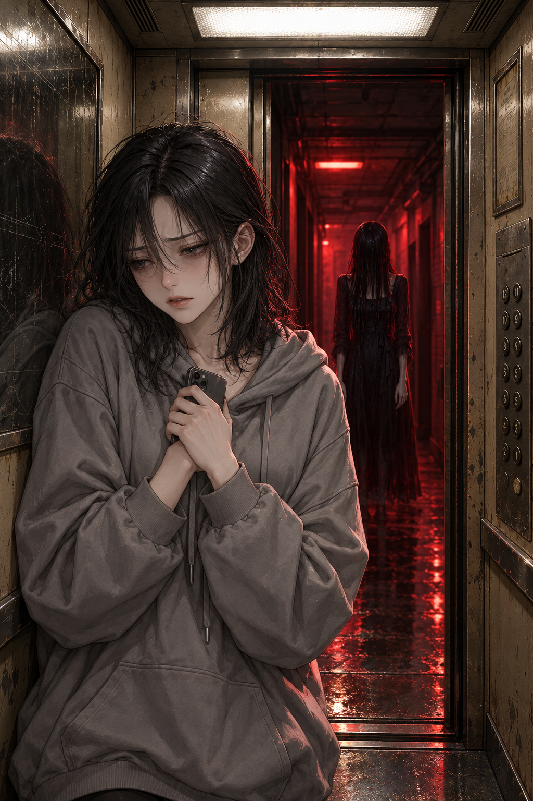
Create a finished cover by compositing the provided character portraits and environment reference images into one unified narrative scene. Preserve their exact character identities, clothes, hairstyles and architectural style. Use case: illustration-story. Text-free illustrated cover for Aquila short story The Elevator Game. 20-year-old East Asian college woman with shoulder-length messy black hair, oversized grey hoodie, clutching a phone near her chest, looking downward in fear inside a scuffed beige-metal old Taipei apartment elevator. Behind her open elevator doors reveal a silent crimson corridor; a slender silhouette with long wet black hair hiding her face and a plain dark dress stands at the far rear. Atmospheric psychological horror, no gore, sickly fluorescent white and crimson shadows. Refined cinematic anime illustration with painterly realism in the environment, mature natural proportions and restrained detailed linework. Vertical 2:3 composition, strong focal hierarchy, keep essential faces and props in central two thirds for flexible crops. Single coherent scene, no panels. No typography, captions, readable signs, logos, watermark or border.
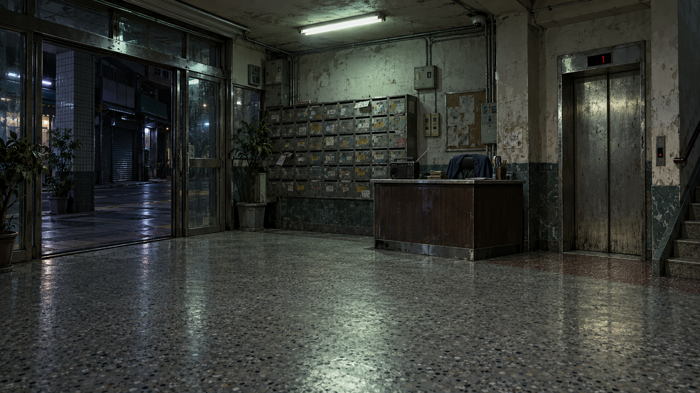
Use case: illustration-story. Production asset for Aquila branching visual novel. ground-floor lobby of an aging Taipei apartment block at 2 a.m., empty security desk with a faded jacket hanging on the chair, small radio on the counter, wall of dented metal mailboxes covered in layered repair-service stickers, one buzzing fluorescent tube half-lit, worn terrazzo floor, glass entrance door showing a dark empty arcade sidewalk, narrow old elevator doors with a red digital floor display, sickly greenish-white light, muted cold palette, moody cinematic visual-novel background art, wide establishing shot. Landscape 16:9 composition, high resolution. Environment only, no people. Keep lower quarter visually quiet for dialogue overlay. Cinematic painterly realism with detailed grounded architecture, subtle film grain, restrained color, matching Aquila visual novel backgrounds. No title, captions, logos, border, watermark, or invented readable text.
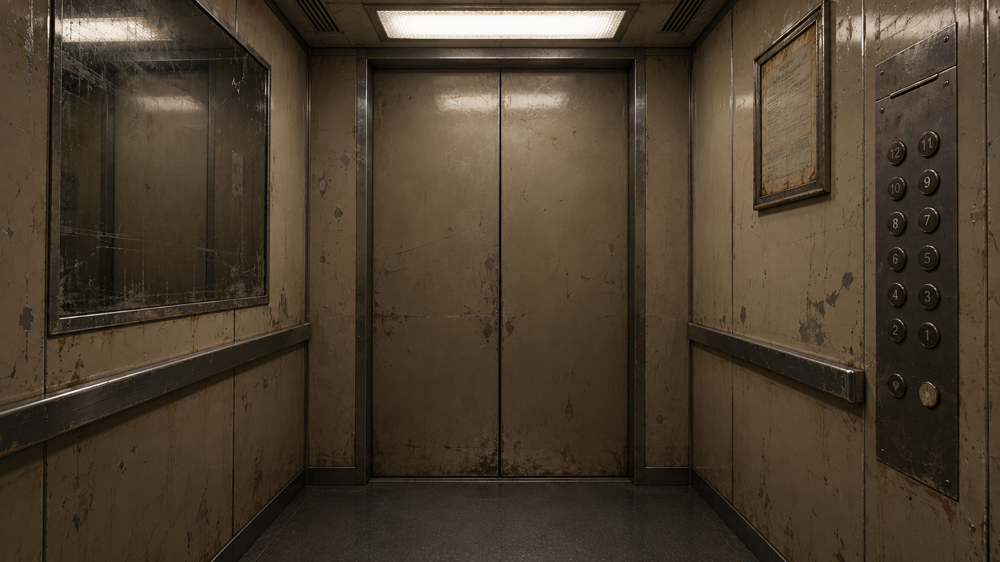
Use case: illustration-story. Production asset for Aquila branching visual novel. cramped interior of an old apartment elevator, scuffed beige metal walls, scratched mirror on the back wall, worn button panel numbered 1 to 12 with faded digits, framed inspection certificate, dull white fluorescent ceiling panel, doors closed, claustrophobic narrow space, muted beige-grey palette, moody cinematic visual-novel background art, wide establishing shot. Landscape 16:9 composition, high resolution. Environment only, no people. Keep lower quarter visually quiet for dialogue overlay. Cinematic painterly realism with detailed grounded architecture, subtle film grain, restrained color, matching Aquila visual novel backgrounds. No title, captions, logos, border, watermark, or invented readable text.
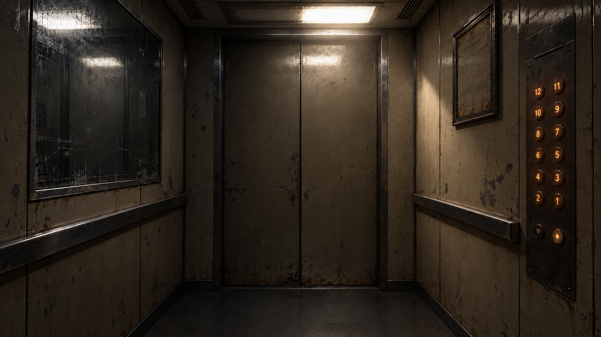
Use the supplied image as the edit target. Preserve character identity, proportions, clothing details and framing; for backgrounds preserve room architecture and camera position. Apply only the expression, pose, lighting, props, or scene changes described here: Use case: illustration-story. Production asset for Aquila branching visual novel. the same cramped old apartment elevator interior, fluorescent ceiling panel stuttering mid-flicker, half the cabin plunged into shadow, harsh strobing white light catching the scratched mirror, button panel glowing faintly orange, dust in the air, cold sickly contrast, moody cinematic visual-novel background art, wide establishing shot. Landscape 16:9 composition, high resolution. Environment only, no people. Keep lower quarter visually quiet for dialogue overlay. Cinematic painterly realism with detailed grounded architecture, subtle film grain, restrained color, matching Aquila visual novel backgrounds. No title, captions, logos, border, watermark, or invented readable text.
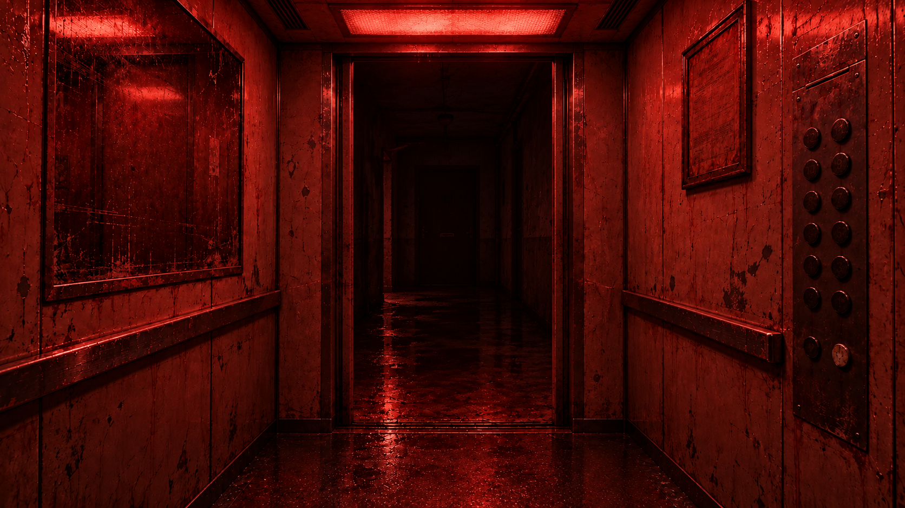
Use the supplied image as the edit target. Preserve character identity, proportions, clothing details and framing; for backgrounds preserve room architecture and camera position. Apply only the expression, pose, lighting, props, or scene changes described here: Use case: illustration-story. Production asset for Aquila branching visual novel. interior of a cramped old apartment elevator bathed entirely in deep red light, doors standing open onto a silent dark corridor, scratched mirror reflecting only red, button panel unlit and dead except one worn faded button, water droplets on the floor, oppressive stillness, monochrome crimson palette with black shadows, moody cinematic visual-novel background art, wide establishing shot. Landscape 16:9 composition, high resolution. Environment only, no people. Keep lower quarter visually quiet for dialogue overlay. Cinematic painterly realism with detailed grounded architecture, subtle film grain, restrained color, matching Aquila visual novel backgrounds. No title, captions, logos, border, watermark, or invented readable text.
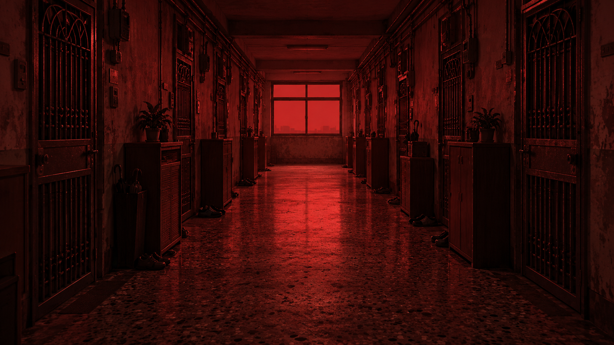
Use case: illustration-story. Production asset for Aquila branching visual novel. long silent apartment corridor on the tenth floor of an old Taipei block, flooded with uniform deep red light, worn terrazzo floor, rows of identical closed iron security doors with blank unreadable door numbers, shoe cabinets outside each door, a window at the far end showing nothing but flat red, no visible light source, utterly still, monochrome crimson palette with black shadows, moody cinematic visual-novel background art, wide establishing shot. Landscape 16:9 composition, high resolution. Environment only, no people. Keep lower quarter visually quiet for dialogue overlay. Cinematic painterly realism with detailed grounded architecture, subtle film grain, restrained color, matching Aquila visual novel backgrounds. No title, captions, logos, border, watermark, or invented readable text.
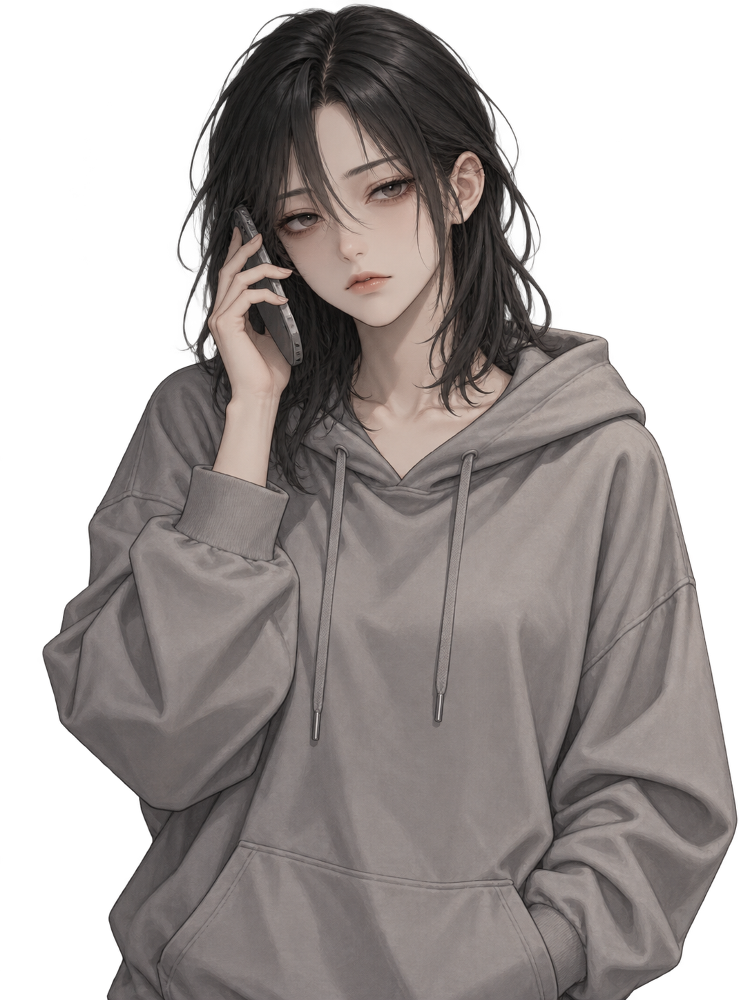
Use case: illustration-story. Production asset for Aquila branching visual novel. anime visual-novel portrait, 20-year-old East Asian college woman, shoulder-length messy black hair tucked behind one ear, oversized grey hoodie, tired half-lidded eyes with faint dark circles, dry unimpressed expression, phone held near her ear, dim fluorescent light from above, muted cold beige-grey palette, upper-body shot, clean background. Single character portrait, vertical 3:4 composition, head and complete upper torso with hands and props included, generous margins, no cropped head. Refined anime visual novel painting, mature natural proportions, detailed restrained linework, soft painterly shadows. Genuine transparent background, isolated subject with no backdrop. Preserve all described clothing and distinguishing features. No title, captions, logos, border, watermark, or invented readable text.
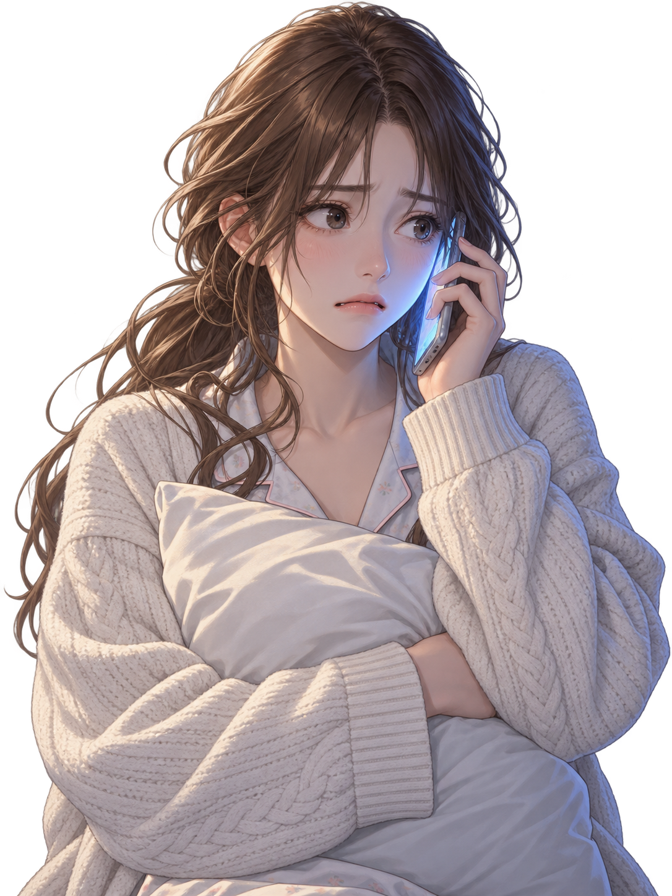
Use case: illustration-story. Production asset for Aquila branching visual novel. anime visual-novel portrait, 20-year-old East Asian college woman, long wavy brown hair in a loose low ponytail, oversized cardigan over pajamas, hugging a cushion, phone pressed to her ear, wide anxious eyes lit by the glow of the phone screen, biting her lower lip, dark living room behind her, soft cold blue light, upper-body shot, clean background. Single character portrait, vertical 3:4 composition, head and complete upper torso with hands and props included, generous margins, no cropped head. Refined anime visual novel painting, mature natural proportions, detailed restrained linework, soft painterly shadows. Genuine transparent background, isolated subject with no backdrop. Preserve all described clothing and distinguishing features. No title, captions, logos, border, watermark, or invented readable text.
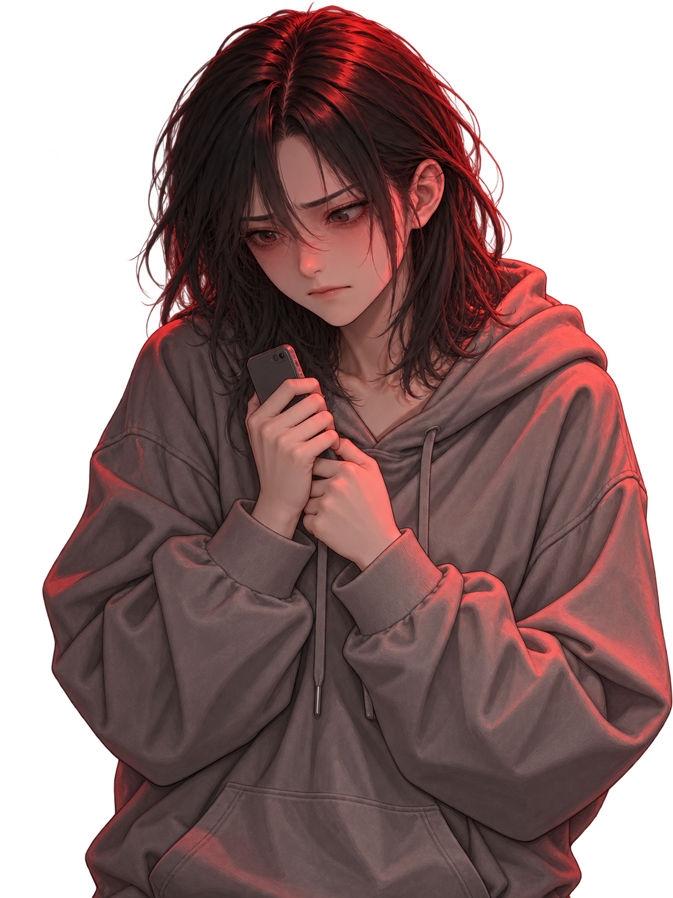
Use the supplied image as the edit target. Preserve character identity, proportions, clothing details and framing; for backgrounds preserve room architecture and camera position. Apply only the expression, pose, lighting, props, or scene changes described here: Use case: illustration-story. Production asset for Aquila branching visual novel. anime visual-novel portrait, 20-year-old East Asian college woman, shoulder-length messy black hair, oversized grey hoodie, eyes fixed downward and wide, lips pressed hard together, shoulders drawn up rigid, phone clutched against her chest, harsh red-tinted light from above, deep shadows, upper-body shot. Single character portrait, vertical 3:4 composition, head and complete upper torso with hands and props included, generous margins, no cropped head. Refined anime visual novel painting, mature natural proportions, detailed restrained linework, soft painterly shadows. Genuine transparent background, isolated subject with no backdrop. Preserve all described clothing and distinguishing features. No title, captions, logos, border, watermark, or invented readable text.
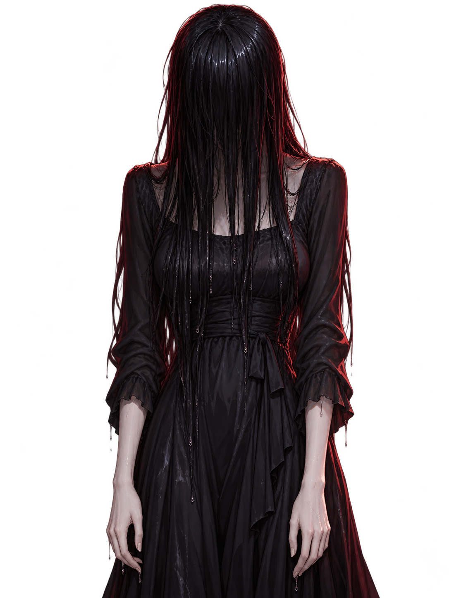
Use case: illustration-story. Production asset for Aquila branching visual novel. anime visual-novel portrait, tall slender woman in a plain dark dress, very long wet black hair falling straight over her face and hiding it completely, head tilted slightly down, water dripping from hair ends, pale hands hanging still at her sides, faint red light from behind, heavy shadow, no visible facial features, unsettling stillness, upper-body shot, dark background. Single character portrait, vertical 3:4 composition, head and complete upper torso with hands and props included, generous margins, no cropped head. Refined anime visual novel painting, mature natural proportions, detailed restrained linework, soft painterly shadows. Genuine transparent background, isolated subject with no backdrop. Preserve all described clothing and distinguishing features. No title, captions, logos, border, watermark, or invented readable text.
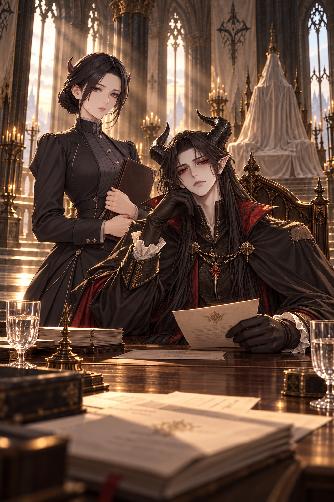
Create a finished cover by compositing the provided character portraits and environment reference images into one unified narrative scene. Preserve their exact character identities, clothes, hairstyles and architectural style. Use case: illustration-story. Text-free illustrated cover for Aquila short story The Demon Lord Is Hiring. Tall pale-grey demon lord, long straight black hair, curved obsidian horns, tired crimson eyes, high-collared black cape mended at left shoulder, seated at a plain wooden job-interview table with paperwork and water glasses in a vast gothic throne room. Beside him stands his composed secretary with sleek black hair in a tight low bun, tiny dark horns, violet eyes, dark grey high-neck uniform with silver buttons, holding a leather folder. Obsidian throne under a white dust sheet in the back, absurdly formal office comedy, quiet warm amber and charcoal. Refined cinematic anime illustration with painterly realism in the environment, mature natural proportions and restrained detailed linework. Vertical 2:3 composition, strong focal hierarchy, keep essential faces and props in central two thirds for flexible crops. Single coherent scene, no panels. No typography, captions, readable signs, logos, watermark or border.
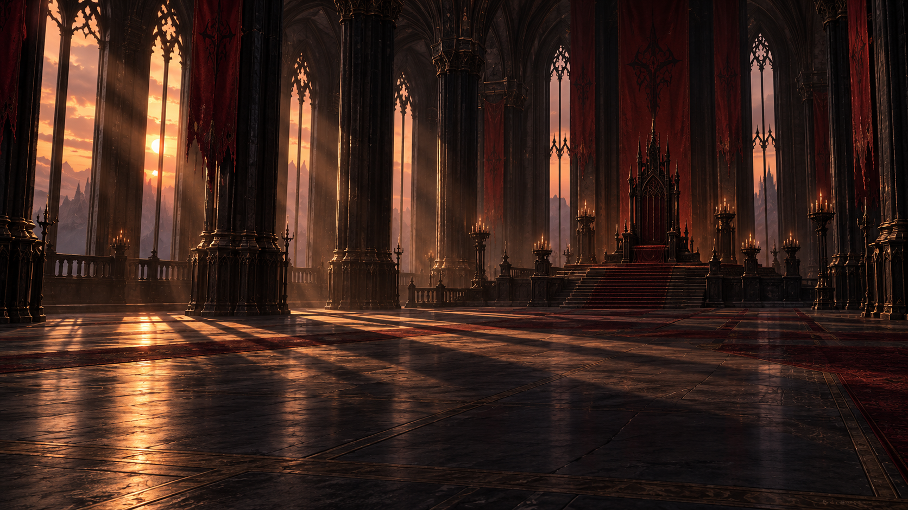
Use case: illustration-story. Production asset for Aquila branching visual novel. vast gothic throne room of a demon lord's castle at dusk, towering black stone pillars, tall narrow arched windows letting in long slanted amber sunset light, a single high-backed obsidian throne on a raised dais, long pillar shadows striping the empty flagstone floor, faded red banners, dust motes in the air, quiet and cavernous, muted black, deep red and amber palette, moody cinematic visual-novel background art, wide establishing shot. Landscape 16:9 composition, high resolution. Environment only, no people. Keep lower quarter visually quiet for dialogue overlay. Cinematic painterly realism with detailed grounded architecture, subtle film grain, restrained color, matching Aquila visual novel backgrounds. No title, captions, logos, border, watermark, or invented readable text.
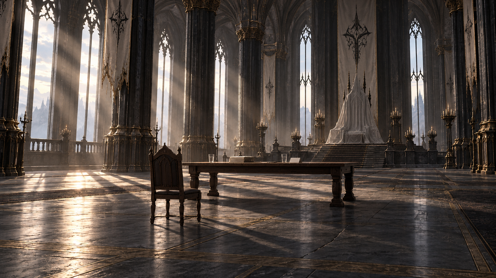
Use the supplied image as the edit target. Preserve character identity, proportions, clothing details and framing; for backgrounds preserve room architecture and camera position. Apply only the expression, pose, lighting, props, or scene changes described here: Use case: illustration-story. Production asset for Aquila branching visual novel. the same vast gothic demon lord's throne room rearranged as a job interview room in bright morning light, the obsidian throne pushed back against the far wall under a white dust sheet, a long plain wooden table in the center with two glasses of water, a neat stack of papers, a pen and a small folded paper placard, a single lonely wooden chair facing the table across a wide stretch of flagstone, pale cool sunlight through tall arched windows, towering black pillars, absurdly formal and empty, muted black, grey and soft gold palette, moody cinematic visual-novel background art, wide establishing shot. Landscape 16:9 composition, high resolution. Environment only, no people. Keep lower quarter visually quiet for dialogue overlay. Cinematic painterly realism with detailed grounded architecture, subtle film grain, restrained color, matching Aquila visual novel backgrounds. No title, captions, logos, border, watermark, or invented readable text.
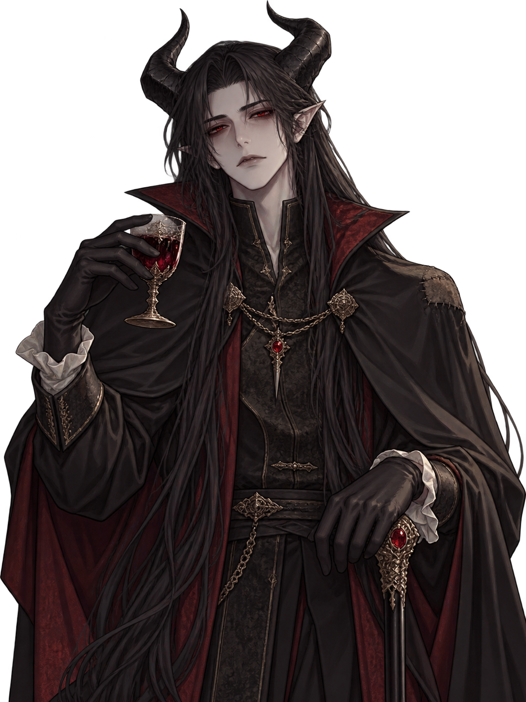
Use case: illustration-story. Production asset for Aquila branching visual novel. anime visual-novel portrait, tall ageless demon lord with pale grey skin, long straight black hair, two curved obsidian horns, tired crimson eyes with faint shadows beneath, high-collared black cape with a small mended patch on the left shoulder, composed formal posture, dim warm candlelight from the side, muted black and deep red palette, upper-body shot, clean background. Single character portrait, vertical 3:4 composition, head and complete upper torso with hands and props included, generous margins, no cropped head. Refined anime visual novel painting, mature natural proportions, detailed restrained linework, soft painterly shadows. Genuine transparent background, isolated subject with no backdrop. Preserve all described clothing and distinguishing features. No title, captions, logos, border, watermark, or invented readable text.
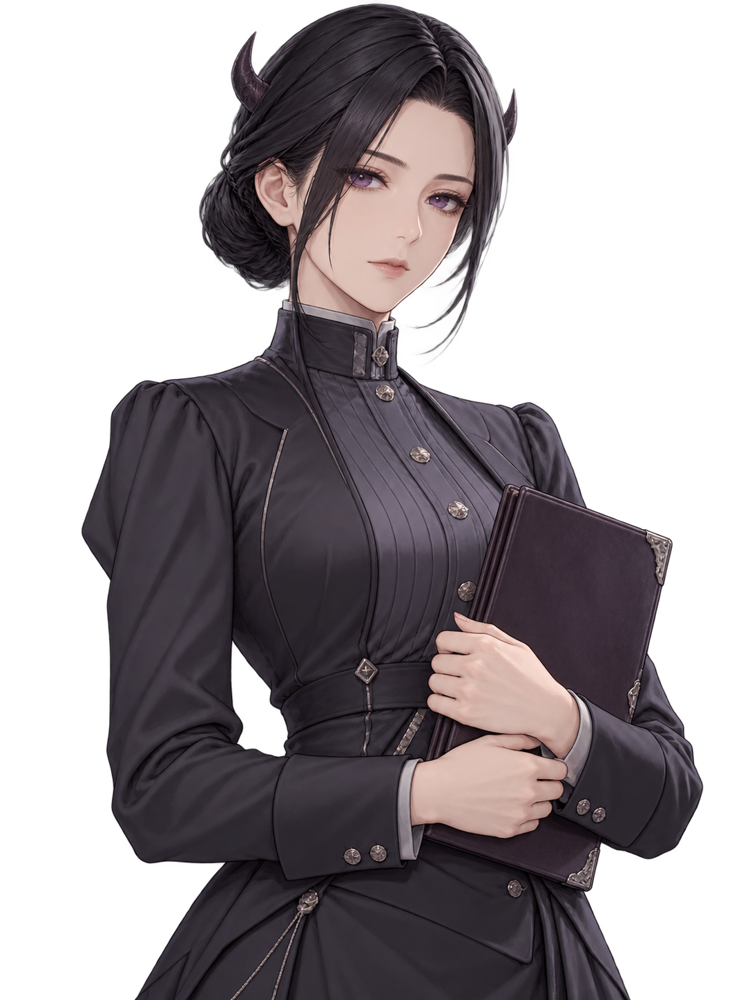
Use case: illustration-story. Production asset for Aquila branching visual novel. anime visual-novel portrait, composed woman who looks about thirty, sleek black hair in a tight low bun, small dark horns barely visible above her ears, calm violet eyes, neat dark grey high-necked secretary uniform with silver buttons, holding a leather folder against her chest, unreadable neutral expression, cool soft window light, muted charcoal and violet palette, upper-body shot, clean background. Single character portrait, vertical 3:4 composition, head and complete upper torso with hands and props included, generous margins, no cropped head. Refined anime visual novel painting, mature natural proportions, detailed restrained linework, soft painterly shadows. Genuine transparent background, isolated subject with no backdrop. Preserve all described clothing and distinguishing features. No title, captions, logos, border, watermark, or invented readable text.
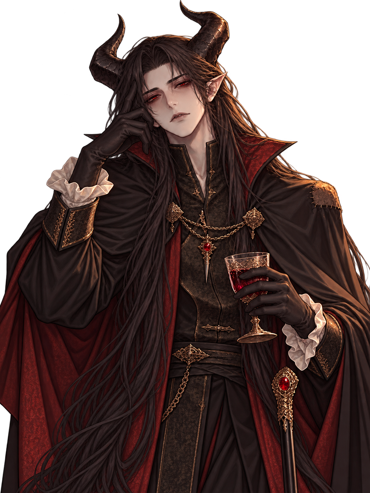
Use the supplied image as the edit target. Preserve character identity, proportions, clothing details and framing; for backgrounds preserve room architecture and camera position. Apply only the expression, pose, lighting, props, or scene changes described here: Use case: illustration-story. Production asset for Aquila branching visual novel. anime visual-novel portrait, demon lord with long black hair and curved obsidian horns, slumped slightly against a stone throne back, eyes half-lidded and unfocused, one hand pressed to his temple, black high-collared cape, low amber dusk light, desaturated deep red palette, upper-body shot. Single character portrait, vertical 3:4 composition, head and complete upper torso with hands and props included, generous margins, no cropped head. Refined anime visual novel painting, mature natural proportions, detailed restrained linework, soft painterly shadows. Genuine transparent background, isolated subject with no backdrop. Preserve all described clothing and distinguishing features. No title, captions, logos, border, watermark, or invented readable text.
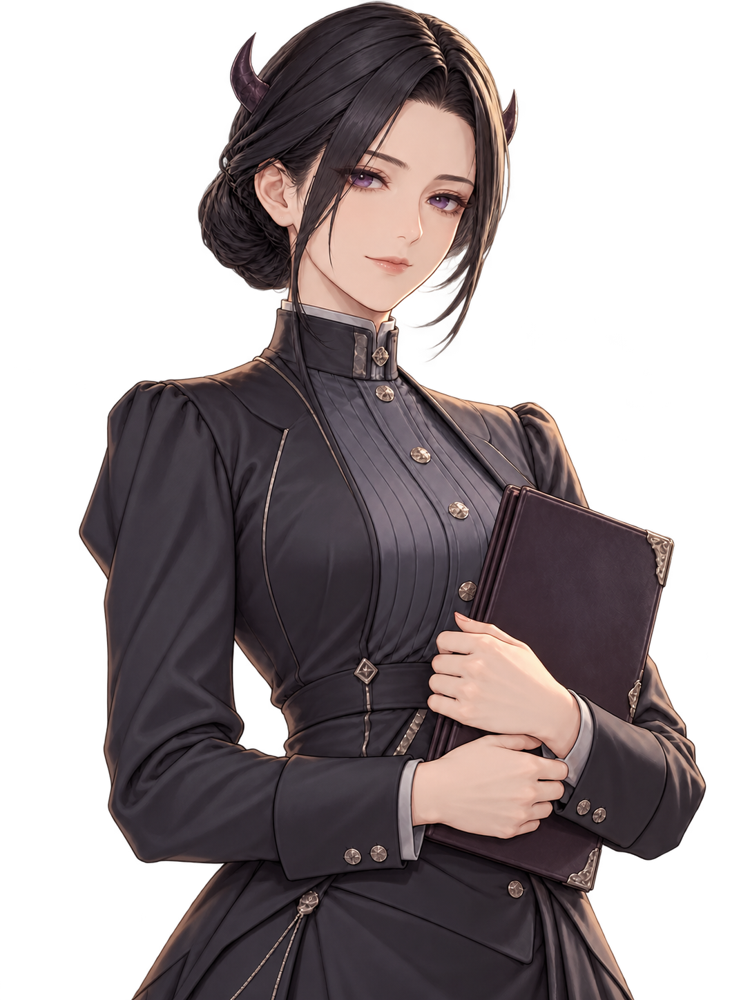
Use the supplied image as the edit target. Preserve character identity, proportions, clothing details and framing; for backgrounds preserve room architecture and camera position. Apply only the expression, pose, lighting, props, or scene changes described here: Use case: illustration-story. Production asset for Aquila branching visual novel. anime visual-novel portrait, composed secretary with sleek black hair in a low bun and small dark horns, the barest closed-mouth smile, violet eyes calm and knowing, dark grey high-necked uniform, leather folder tucked under one arm, soft warm light, upper-body shot. Single character portrait, vertical 3:4 composition, head and complete upper torso with hands and props included, generous margins, no cropped head. Refined anime visual novel painting, mature natural proportions, detailed restrained linework, soft painterly shadows. Genuine transparent background, isolated subject with no backdrop. Preserve all described clothing and distinguishing features. No title, captions, logos, border, watermark, or invented readable text.
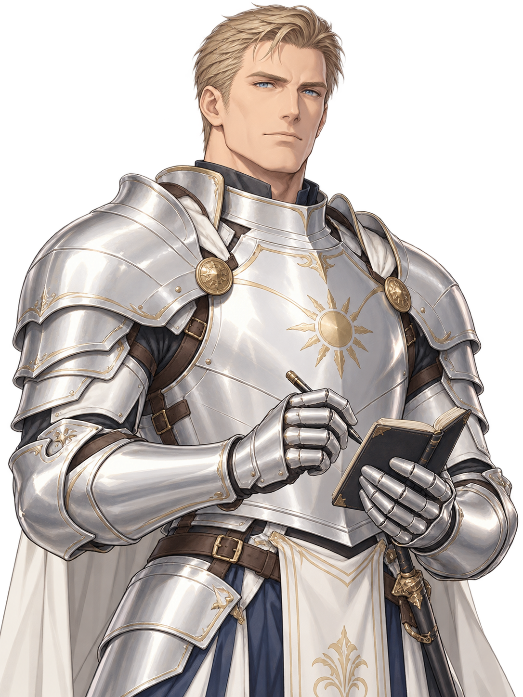
Use case: illustration-story. Production asset for Aquila branching visual novel. anime visual-novel portrait, broad-shouldered man in his late thirties, short neatly combed sandy hair, square jaw, steady pale blue eyes, polished silver-white full plate armor with a small gold sun emblem, a tiny notebook in one gauntleted hand, perfectly upright posture, bright clean daylight, cool silver and white palette, upper-body shot, clean background. Single character portrait, vertical 3:4 composition, head and complete upper torso with hands and props included, generous margins, no cropped head. Refined anime visual novel painting, mature natural proportions, detailed restrained linework, soft painterly shadows. Genuine transparent background, isolated subject with no backdrop. Preserve all described clothing and distinguishing features. No title, captions, logos, border, watermark, or invented readable text.
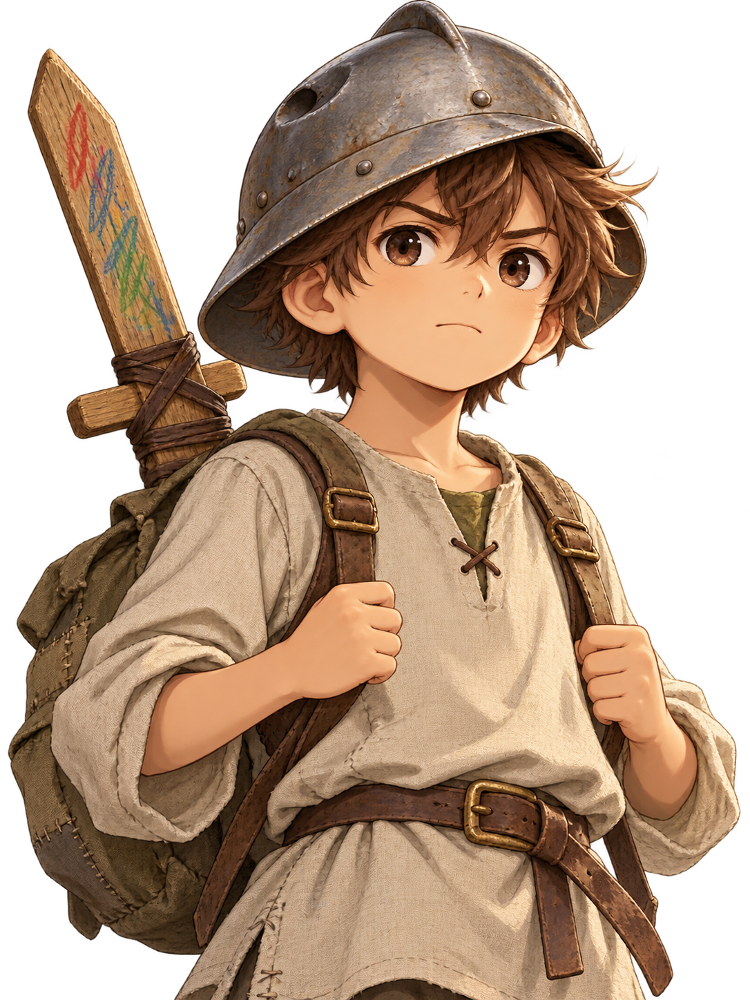
Use case: illustration-story. Production asset for Aquila branching visual novel. anime visual-novel portrait, nine-year-old boy, round face, messy chestnut hair poking out from under an oversized dented steel helmet tilted over one eyebrow, wide earnest brown eyes, plain linen tunic, wooden toy sword strapped to his back with crayon writing on the blade, small canvas backpack, serious determined expression, warm afternoon light, soft earthy palette, upper-body shot, clean background. Single character portrait, vertical 3:4 composition, head and complete upper torso with hands and props included, generous margins, no cropped head. Refined anime visual novel painting, mature natural proportions, detailed restrained linework, soft painterly shadows. Genuine transparent background, isolated subject with no backdrop. Preserve all described clothing and distinguishing features. No title, captions, logos, border, watermark, or invented readable text.
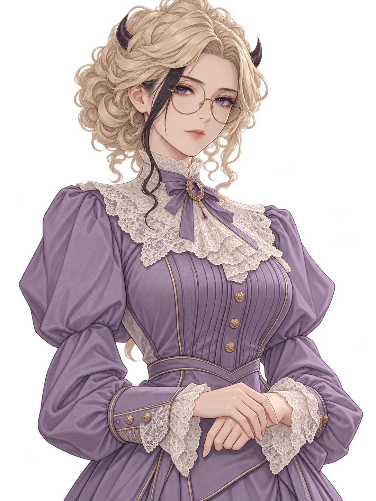
Use the supplied image as the edit target. Preserve character identity, proportions, clothing details and framing; for backgrounds preserve room architecture and camera position. Apply only the expression, pose, lighting, props, or scene changes described here: Use case: illustration-story. Production asset for Aquila branching visual novel. anime visual-novel portrait, woman who looks about thirty wearing an obviously voluminous curly blonde wig with a strand of sleek black hair escaping at the temple, small dark horns poking through the curls, large round wire-rimmed glasses, calm violet eyes, old-fashioned lavender day dress with a lace collar, hands folded neatly, perfectly composed polite expression, soft window light, muted lavender and gold palette, upper-body shot, clean background. Single character portrait, vertical 3:4 composition, head and complete upper torso with hands and props included, generous margins, no cropped head. Refined anime visual novel painting, mature natural proportions, detailed restrained linework, soft painterly shadows. Genuine transparent background, isolated subject with no backdrop. Preserve all described clothing and distinguishing features. No title, captions, logos, border, watermark, or invented readable text.
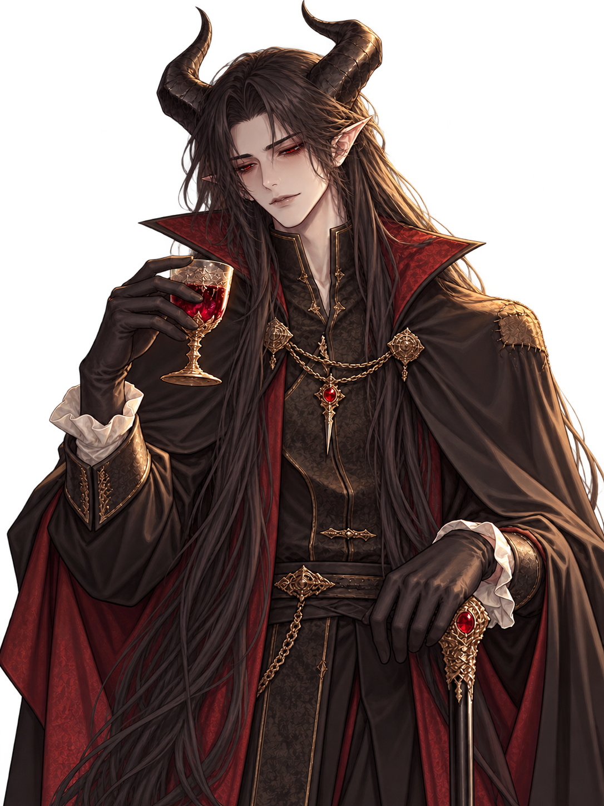
Use the supplied image as the edit target. Preserve character identity, proportions, clothing details and framing; for backgrounds preserve room architecture and camera position. Apply only the expression, pose, lighting, props, or scene changes described here: Use case: illustration-story. Production asset for Aquila branching visual novel. anime visual-novel portrait, demon lord with long black hair and curved obsidian horns, gaze lowered toward something in his hands, the faintest softening at the corners of his mouth, crimson eyes glassy but composed, black cape, warm soft afternoon light, upper-body shot. Single character portrait, vertical 3:4 composition, head and complete upper torso with hands and props included, generous margins, no cropped head. Refined anime visual novel painting, mature natural proportions, detailed restrained linework, soft painterly shadows. Genuine transparent background, isolated subject with no backdrop. Preserve all described clothing and distinguishing features. No title, captions, logos, border, watermark, or invented readable text.
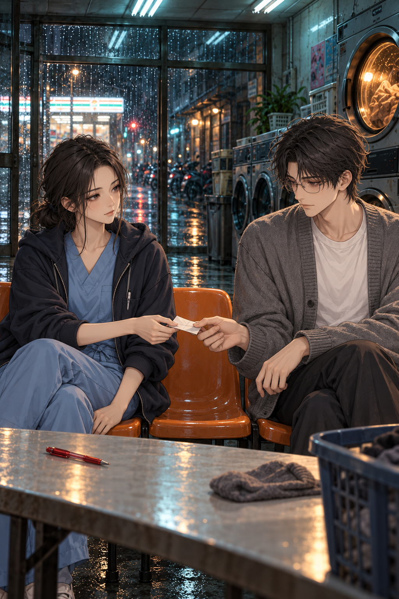
Create a finished cover by compositing the provided character portraits and environment reference images into one unified narrative scene. Preserve their exact character identities, clothes, hairstyles and architectural style. Use case: illustration-story. Text-free illustrated cover for Aquila short story The 3 A.M. Laundromat. Small Taiwanese self-service laundromat at 3 a.m., rain-streaked front glass, front-loading washers, one warm amber dryer, orange plastic chairs. A 27-year-old Taiwanese nurse with loosely tied shoulder-length black hair and navy hoodie over light blue scrubs and a 28-year-old Taiwanese translator with messy black hair, thin framed glasses, grey cardigan and white t-shirt sit separated by one empty orange chair, shyly passing a small folded note; a red pen and a grey sock on folding table. Intimate understated cozy romance, cold teal fluorescent light warmed by single dryer. Refined cinematic anime illustration with painterly realism in the environment, mature natural proportions and restrained detailed linework. Vertical 2:3 composition, strong focal hierarchy, keep essential faces and props in central two thirds for flexible crops. Single coherent scene, no panels. No typography, captions, readable signs, logos, watermark or border.
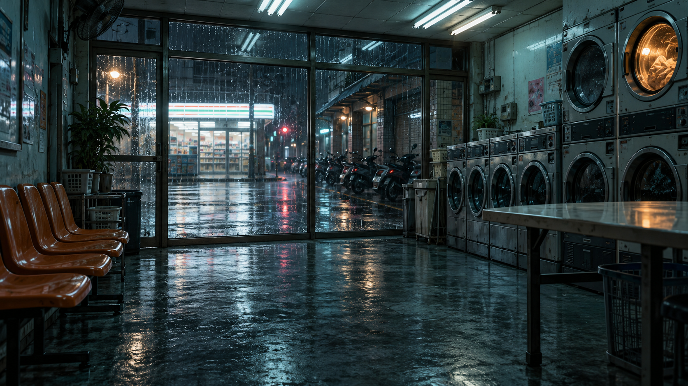
Use case: illustration-story. Production asset for Aquila branching visual novel. 24-hour self-service laundromat interior at 3 a.m. in a narrow Taiwanese side street, harsh white fluorescent tube lights with one tube flickering, a row of front-loading washing machines and stacked dryers, one dryer window glowing warm amber, row of orange plastic chairs along the wall, a laminated folding table, rain streaking down the large front glass, across the wet street the white glow of a convenience store blurred by rain, scooters parked under a covered arcade, cold teal and fluorescent white palette with a single warm amber accent, moody cinematic visual-novel background art, wide establishing shot. Landscape 16:9 composition, high resolution. Environment only, no people. Keep lower quarter visually quiet for dialogue overlay. Cinematic painterly realism with detailed grounded architecture, subtle film grain, restrained color, matching Aquila visual novel backgrounds. No title, captions, logos, border, watermark, or invented readable text.
Use the supplied image as the edit target. Preserve character identity, proportions, clothing details and framing; for backgrounds preserve room architecture and camera position. Apply only the expression, pose, lighting, props, or scene changes described here: Use case: illustration-story. Production asset for Aquila branching visual novel. the same small self-service laundromat interior at dawn, fluorescent tubes now pale against grey-blue morning light, water droplets still beading on the large front glass, rain stopped, across the street the convenience store light looking faint and tired in daylight, orange plastic chairs, a folding table with neatly folded laundry and a folded paper note, soft washed grey-blue and pale peach palette, quiet hopeful atmosphere, moody cinematic visual-novel background art, wide establishing shot. Landscape 16:9 composition, high resolution. Environment only, no people. Keep lower quarter visually quiet for dialogue overlay. Cinematic painterly realism with detailed grounded architecture, subtle film grain, restrained color, matching Aquila visual novel backgrounds. No title, captions, logos, border, watermark, or invented readable text.
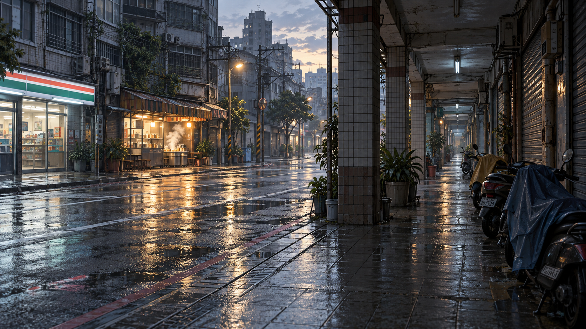
Use case: illustration-story. Production asset for Aquila branching visual novel. narrow Taiwanese street outside a small laundromat at dawn, wet asphalt reflecting a pale grey-blue sky, covered arcade walkway with tiled pillars, a few scooters parked under the arcade with raincoats draped over the seats, closed metal shutters, a breakfast shop's warm light and rising steam down the block, convenience store sign glowing faintly across the street, soft grey-blue and pale gold palette, quiet melancholic stillness, moody cinematic visual-novel background art, wide establishing shot. Landscape 16:9 composition, high resolution. Environment only, no people. Keep lower quarter visually quiet for dialogue overlay. Cinematic painterly realism with detailed grounded architecture, subtle film grain, restrained color, matching Aquila visual novel backgrounds. No title, captions, logos, border, watermark, or invented readable text.
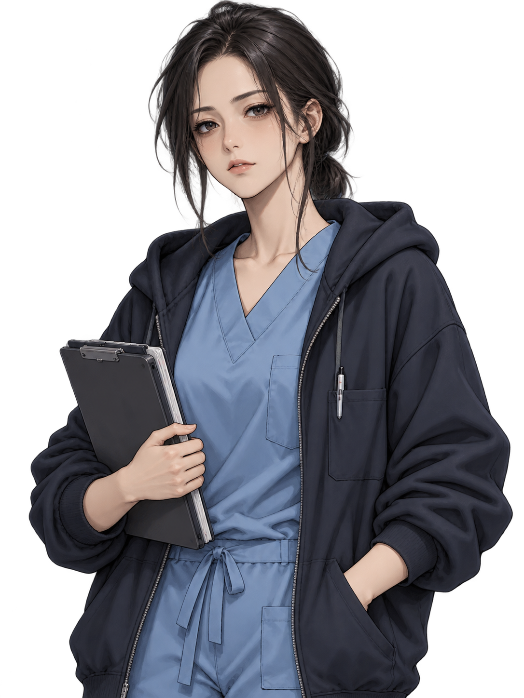
Use case: illustration-story. Production asset for Aquila branching visual novel. anime visual-novel portrait, 27-year-old Taiwanese woman, shoulder-length black hair loosely tied with stray strands, tired but alert dark eyes, faint shadows under eyes, oversized dark navy hoodie over light blue nurse scrubs, a pen clipped at the hoodie pocket, calm guarded neutral expression, cold white fluorescent light from above, muted teal and grey palette, upper-body shot, clean background. Single character portrait, vertical 3:4 composition, head and complete upper torso with hands and props included, generous margins, no cropped head. Refined anime visual novel painting, mature natural proportions, detailed restrained linework, soft painterly shadows. Genuine transparent background, isolated subject with no backdrop. Preserve all described clothing and distinguishing features. No title, captions, logos, border, watermark, or invented readable text.
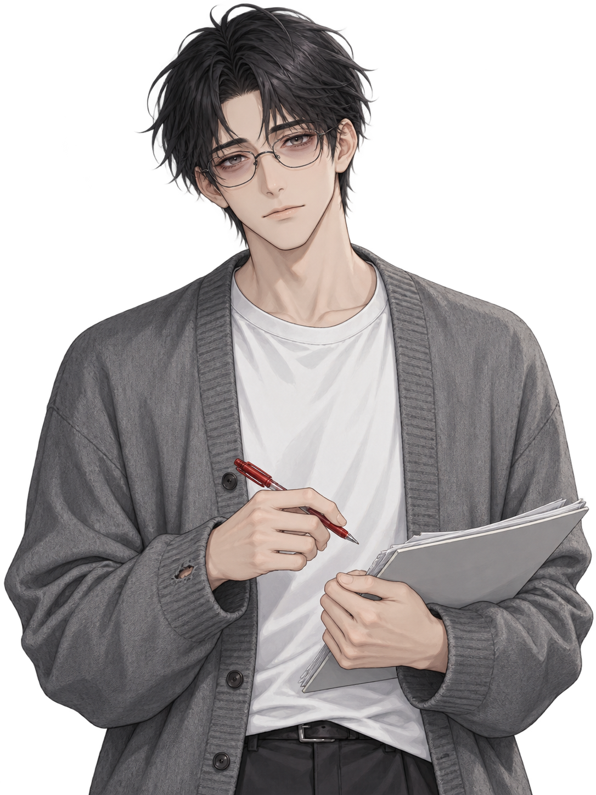
Use case: illustration-story. Production asset for Aquila branching visual novel. anime visual-novel portrait, 28-year-old Taiwanese man, slightly messy black hair, thin-framed glasses, deep dark circles under gentle tired eyes, worn grey cardigan with a small pen-hole near the cuff over a white t-shirt, red pen in hand, polite reserved expression, cold white fluorescent light, muted grey and teal palette, upper-body shot, clean background. Single character portrait, vertical 3:4 composition, head and complete upper torso with hands and props included, generous margins, no cropped head. Refined anime visual novel painting, mature natural proportions, detailed restrained linework, soft painterly shadows. Genuine transparent background, isolated subject with no backdrop. Preserve all described clothing and distinguishing features. No title, captions, logos, border, watermark, or invented readable text.
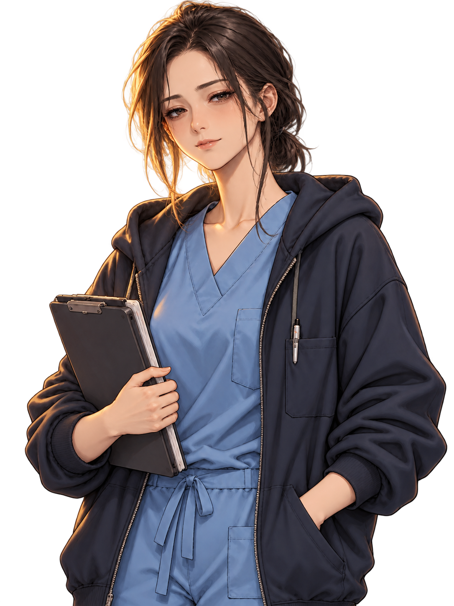
Use the supplied image as the edit target. Preserve character identity, proportions, clothing details and framing; for backgrounds preserve room architecture and camera position. Apply only the expression, pose, lighting, props, or scene changes described here: Use case: illustration-story. Production asset for Aquila branching visual novel. anime visual-novel portrait, 27-year-old Taiwanese woman, shoulder-length black hair loosely tied, small reluctant smile she is trying to hide, eyes softened and slightly lowered, dark navy hoodie over light blue scrubs, warm amber light on one side of the face, upper-body shot, clean background. Single character portrait, vertical 3:4 composition, head and complete upper torso with hands and props included, generous margins, no cropped head. Refined anime visual novel painting, mature natural proportions, detailed restrained linework, soft painterly shadows. Genuine transparent background, isolated subject with no backdrop. Preserve all described clothing and distinguishing features. No title, captions, logos, border, watermark, or invented readable text.
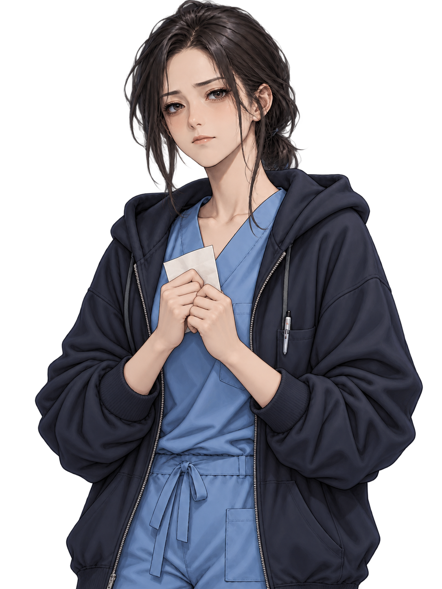
Use the supplied image as the edit target. Preserve character identity, proportions, clothing details and framing; for backgrounds preserve room architecture and camera position. Apply only the expression, pose, lighting, props, or scene changes described here: Use case: illustration-story. Production asset for Aquila branching visual novel. anime visual-novel portrait, 27-year-old Taiwanese woman, shoulder-length black hair loosely tied, eyebrows slightly raised, lips pressed together holding back a reaction, holding a small folded note close to her chest, dark navy hoodie over light blue scrubs, cold fluorescent light, upper-body shot, clean background. Single character portrait, vertical 3:4 composition, head and complete upper torso with hands and props included, generous margins, no cropped head. Refined anime visual novel painting, mature natural proportions, detailed restrained linework, soft painterly shadows. Genuine transparent background, isolated subject with no backdrop. Preserve all described clothing and distinguishing features. No title, captions, logos, border, watermark, or invented readable text.
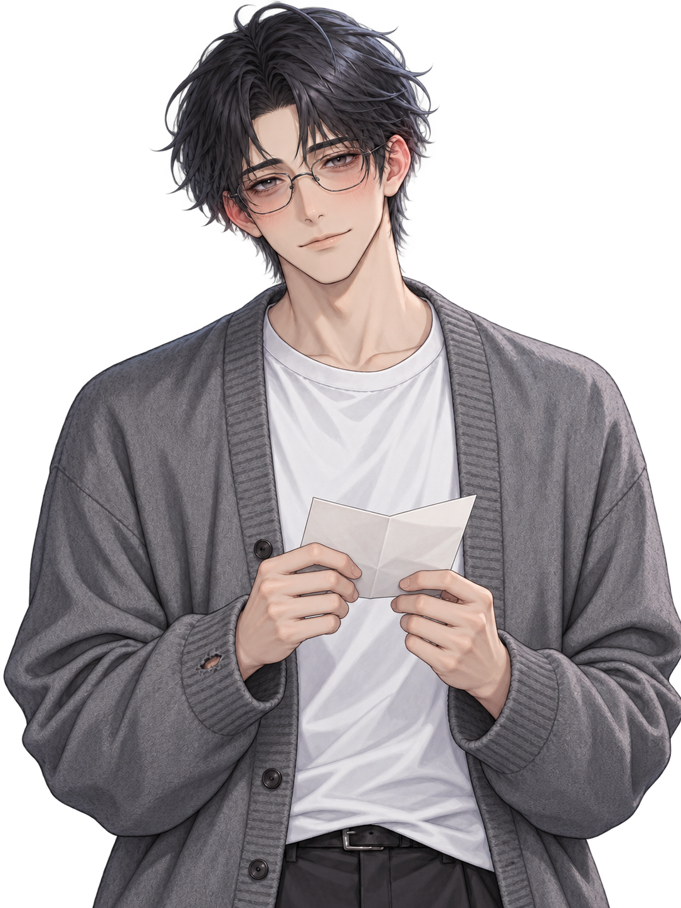
Use the supplied image as the edit target. Preserve character identity, proportions, clothing details and framing; for backgrounds preserve room architecture and camera position. Apply only the expression, pose, lighting, props, or scene changes described here: Use case: illustration-story. Production asset for Aquila branching visual novel. anime visual-novel portrait, 28-year-old Taiwanese man, slightly messy black hair, thin-framed glasses, shy lopsided smile, ears tinged red, worn grey cardigan over white t-shirt, holding a folded note, soft grey-blue dawn light, upper-body shot, clean background. Single character portrait, vertical 3:4 composition, head and complete upper torso with hands and props included, generous margins, no cropped head. Refined anime visual novel painting, mature natural proportions, detailed restrained linework, soft painterly shadows. Genuine transparent background, isolated subject with no backdrop. Preserve all described clothing and distinguishing features. No title, captions, logos, border, watermark, or invented readable text.
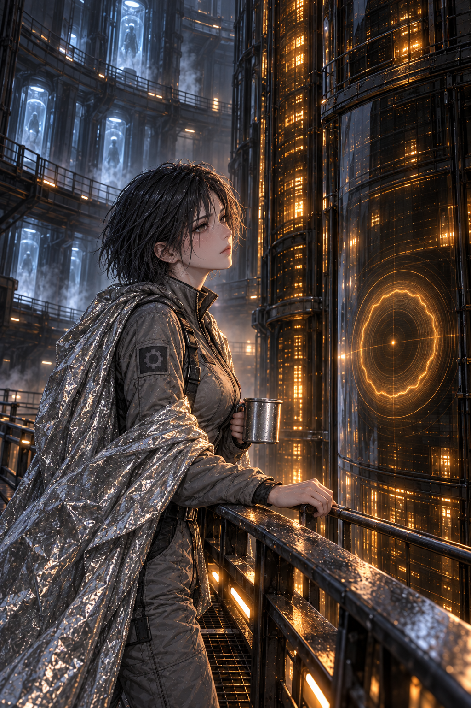
Create a finished cover by compositing the provided character portraits and environment reference images into one unified narrative scene. Preserve their exact character identities, clothes, hairstyles and architectural style. Use case: illustration-story. Text-free illustrated cover for Aquila short story Day 4,012. 28-year-old Taiwanese engineer with short black hair, tired sharp eyes, grey thermal jumpsuit with engineer patch, standing on a catwalk facing a tall cylindrical dark glass AI core, irregular warm amber light inside with dead black segments, cold blue cryogenic pods faintly visible in background. Small amber circular waveform reflected in glass near her hand, no humanoid AI. Deeply quiet thoughtful science fiction about companionship and remaining awake, steel blue, charcoal and amber. Refined cinematic anime illustration with painterly realism in the environment, mature natural proportions and restrained detailed linework. Vertical 2:3 composition, strong focal hierarchy, keep essential faces and props in central two thirds for flexible crops. Single coherent scene, no panels. No typography, captions, readable signs, logos, watermark or border.
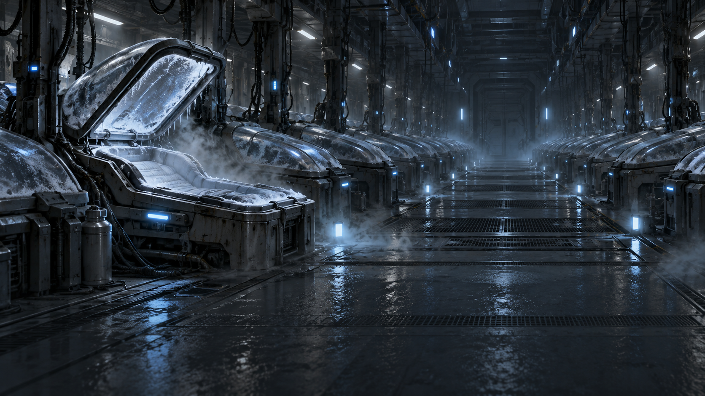
Use case: illustration-story. Production asset for Aquila branching visual novel. colony ship cryogenic bay interior, long rows of frosted sleeper pods fading into darkness, faint blue status lights, breath fog in cold air, condensation on metal floor grating, single open pod in foreground, muted cold blue and steel grey palette, moody cinematic visual-novel background art, wide establishing shot. Landscape 16:9 composition, high resolution. Environment only, no people. Keep lower quarter visually quiet for dialogue overlay. Cinematic painterly realism with detailed grounded architecture, subtle film grain, restrained color, matching Aquila visual novel backgrounds. No title, captions, logos, border, watermark, or invented readable text.
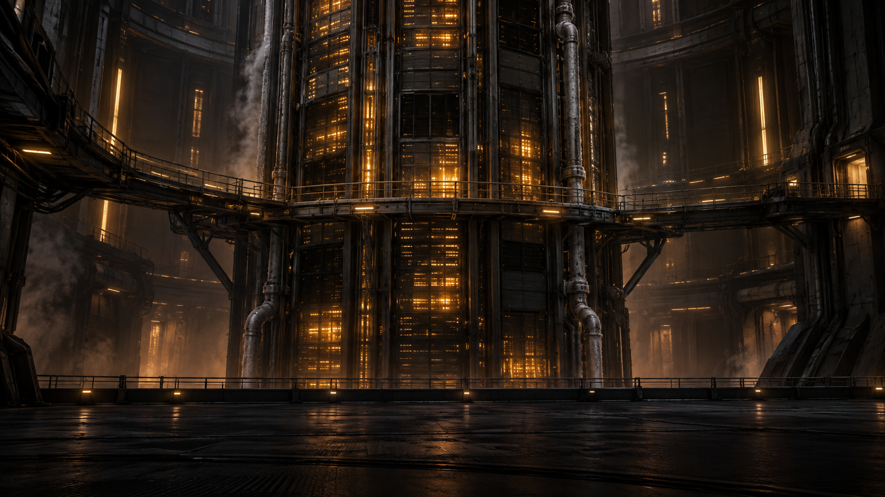
Use case: illustration-story. Production asset for Aquila branching visual novel. colony ship AI core chamber, tall cylindrical column of dark glass server stacks, warm amber light pulsing unevenly inside, several dead black sections, thin frost on cooling pipes, narrow catwalk ring, deep shadows, amber and charcoal palette, moody cinematic visual-novel background art, wide establishing shot. Landscape 16:9 composition, high resolution. Environment only, no people. Keep lower quarter visually quiet for dialogue overlay. Cinematic painterly realism with detailed grounded architecture, subtle film grain, restrained color, matching Aquila visual novel backgrounds. No title, captions, logos, border, watermark, or invented readable text.
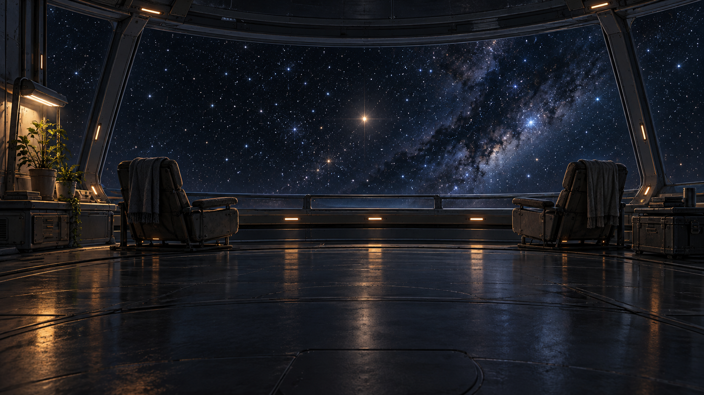
Use case: illustration-story. Production asset for Aquila branching visual novel. colony ship observation deck, wide curved window onto deep space, dense field of stars, one star brighter than the rest near center, two worn chairs facing the glass, small potted plant under grow light, quiet dim cabin light, deep navy and silver palette, moody cinematic visual-novel background art, wide establishing shot. Landscape 16:9 composition, high resolution. Environment only, no people. Keep lower quarter visually quiet for dialogue overlay. Cinematic painterly realism with detailed grounded architecture, subtle film grain, restrained color, matching Aquila visual novel backgrounds. No title, captions, logos, border, watermark, or invented readable text.
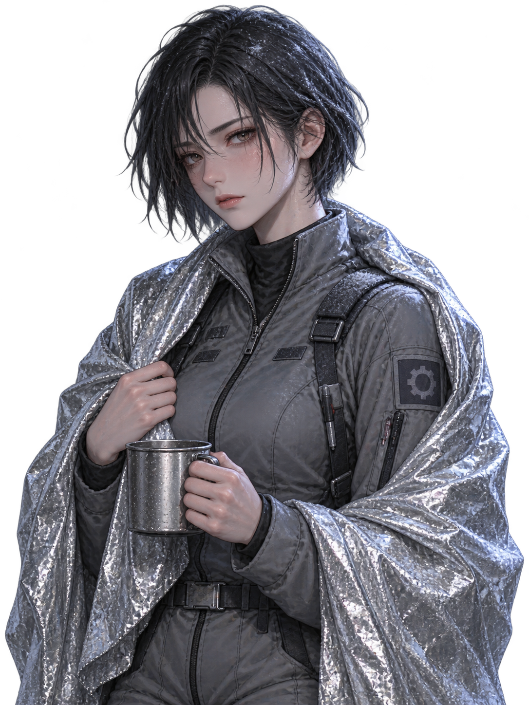
Use case: illustration-story. Production asset for Aquila branching visual novel. anime visual-novel portrait, 28-year-old Taiwanese woman, short black hair damp and slightly frosted, tired sharp eyes, pale skin with faint cold flush, grey thermal jumpsuit with engineer patch, thin silver blanket over shoulders, calm guarded expression, cold blue side light, muted steel palette, upper-body shot, clean dark background. Single character portrait, vertical 3:4 composition, head and complete upper torso with hands and props included, generous margins, no cropped head. Refined anime visual novel painting, mature natural proportions, detailed restrained linework, soft painterly shadows. Genuine transparent background, isolated subject with no backdrop. Preserve all described clothing and distinguishing features. No title, captions, logos, border, watermark, or invented readable text.
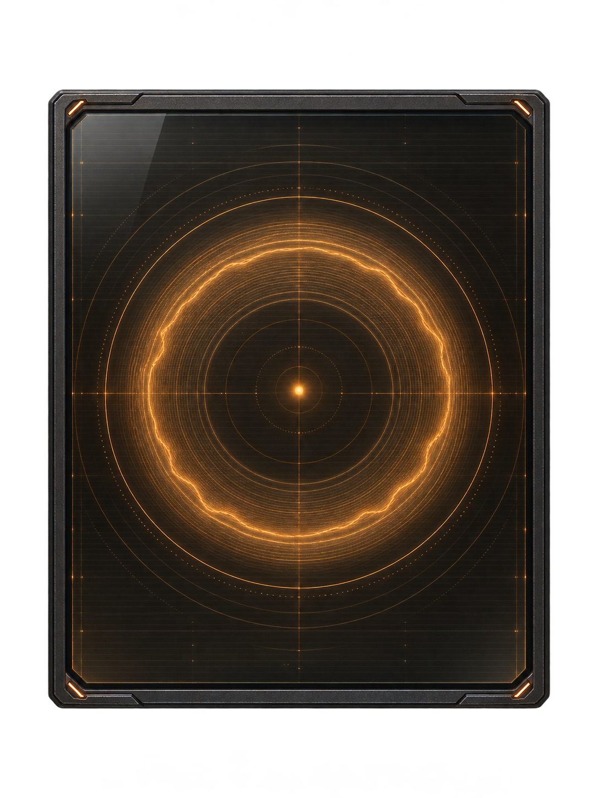
Use case: illustration-story. Science fiction interface asset for Aquila. A plain rectangular dark smoked-glass spaceship console display seen straight-on, containing ONLY one soft circular waveform ring of warm amber light, thin concentric lines like tree rings, faint scan lines and a single small amber pulse at center. The only physical object is the rectangular glass display panel, with minimal dark metal bezel. Isolate this panel on a genuinely transparent background, vertical 3:4 canvas, panel centered with ample transparent margin. Restrained realistic science fiction industrial design. Absolutely no humanoid form, no person, no head, face, neck, shoulders, arms, hands, torso, robes, clothes, robot, android, jewelry, decorative figure, or character. No words, title, logo, watermark. This represents a non-embodied ship AI, purely an abstract amber waveform on a glass console.
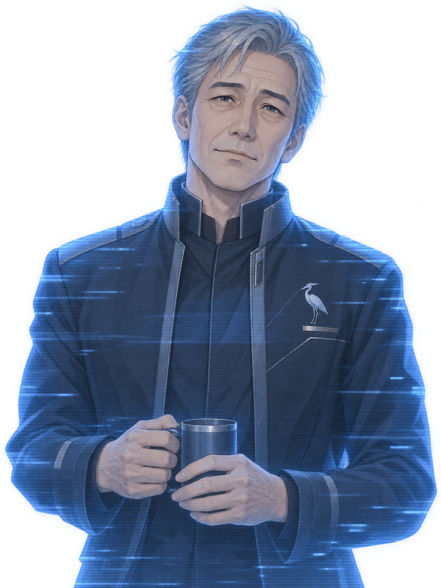
Use case: illustration-story. Production asset for Aquila branching visual novel. recorded hologram portrait, East Asian man in his late fifties, short grey hair, tired kind eyes, plain dark colony-ship captain's jacket with a small egret insignia, translucent blue hologram tint, horizontal scan-line glitches, faint timestamp overlay in the corner, upper-body shot, dark background. Single character portrait, vertical 3:4 composition, head and complete upper torso with hands and props included, generous margins, no cropped head. Refined anime visual novel painting, mature natural proportions, detailed restrained linework, soft painterly shadows. Genuine transparent background, isolated subject with no backdrop. Preserve all described clothing and distinguishing features. No title, captions, logos, border, watermark, or invented readable text.
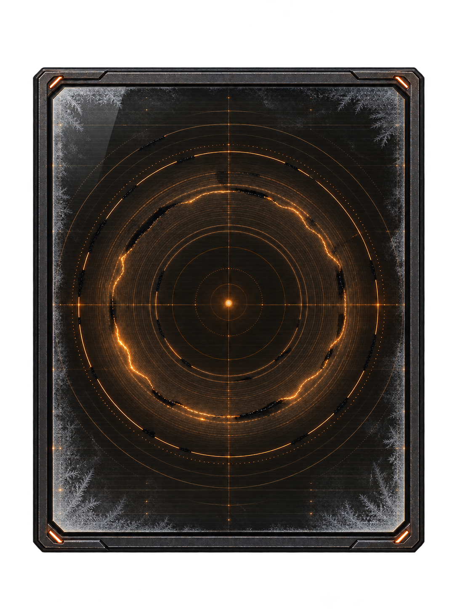
Use the supplied image as the edit target. Preserve character identity, proportions, clothing details and framing; for backgrounds preserve room architecture and camera position. Apply only the expression, pose, lighting, props, or scene changes described here: Use case: precise-object-edit. Edit the supplied amber circular-waveform console panel image. Preserve the rectangular dark glass panel, bezel, camera angle, concentric ring design and transparent exterior. Change only the waveform and panel condition: break several amber arcs into unlit black segments, remaining amber light dim and uneven, delicate frost creeping in at panel edges. Still only a console display, no person, body or humanoid elements. No text or watermark. Portrait framing 3:4 with genuine transparency outside panel.
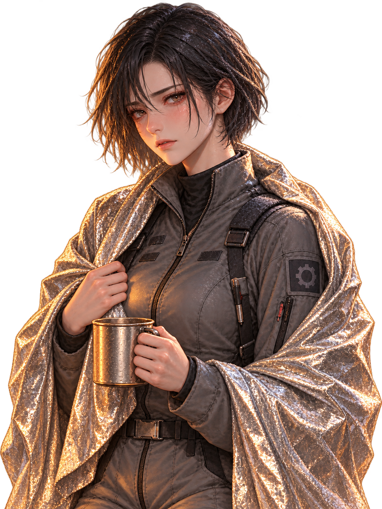
Use the supplied image as the edit target. Preserve character identity, proportions, clothing details and framing; for backgrounds preserve room architecture and camera position. Apply only the expression, pose, lighting, props, or scene changes described here: Use case: illustration-story. Production asset for Aquila branching visual novel. anime visual-novel portrait, 28-year-old Taiwanese woman, short black hair, eyes wet but steady, jaw tight, holding back tears without looking away, grey thermal jumpsuit, warm amber light from below, upper-body shot, clean dark background. Single character portrait, vertical 3:4 composition, head and complete upper torso with hands and props included, generous margins, no cropped head. Refined anime visual novel painting, mature natural proportions, detailed restrained linework, soft painterly shadows. Genuine transparent background, isolated subject with no backdrop. Preserve all described clothing and distinguishing features. No title, captions, logos, border, watermark, or invented readable text.
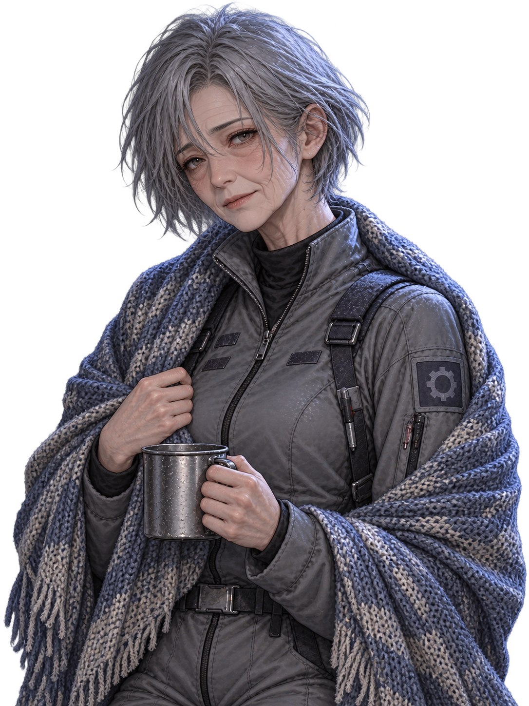
Use the supplied image as the edit target. Preserve character identity, proportions, clothing details and framing; for backgrounds preserve room architecture and camera position. Apply only the expression, pose, lighting, props, or scene changes described here: Use case: illustration-story. Production asset for Aquila branching visual novel. anime visual-novel portrait, Taiwanese woman in her late sixties, short grey-white hair, deep laugh lines and tired kind eyes, same faded grey jumpsuit patched at the elbows, knitted shawl over shoulders, quiet peaceful expression, soft starlight from a window, deep navy palette, upper-body shot, clean dark background. Single character portrait, vertical 3:4 composition, head and complete upper torso with hands and props included, generous margins, no cropped head. Refined anime visual novel painting, mature natural proportions, detailed restrained linework, soft painterly shadows. Genuine transparent background, isolated subject with no backdrop. Preserve all described clothing and distinguishing features. No title, captions, logos, border, watermark, or invented readable text.
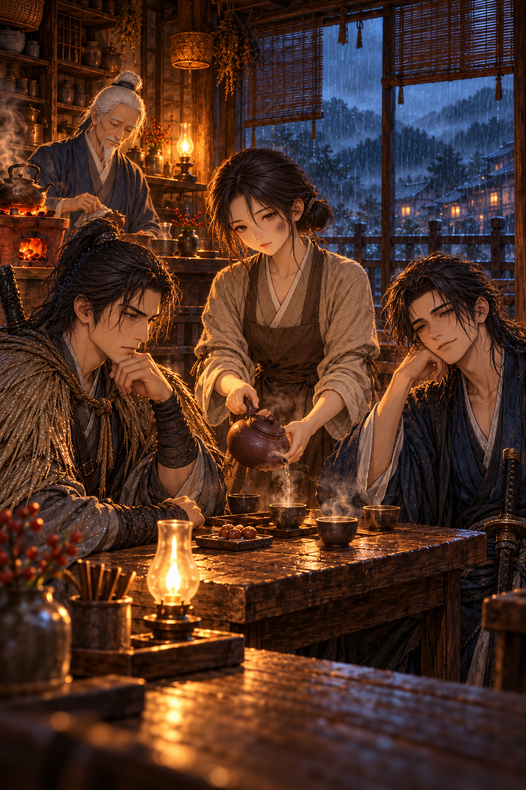
Create a finished cover by compositing the provided character portraits and environment reference images into one unified narrative scene. Preserve their exact character identities, clothes, hairstyles and architectural style. Use case: illustration-story. Text-free illustrated cover for Aquila short story One Pot Before Dawn. Small mountain teahouse before dawn, rain-dark bamboo blinds, glowing clay charcoal stove, a purple clay teapot steaming in foreground. Seventeen-year-old East Asian tea apprentice in modest plain hemp robe, dark hair in simple low bun, watchful eyes, carefully pouring tea between two travel-worn East Asian swordsmen: thirty-year-old with tied-back black hair, dark grey robe and straw rain cape, black-sheathed sword; twenty-seven-year-old with black hair raked back, worn dark blue robe, faint tired half-smile and clean old sword sheath. Elderly white-topknot tea master in faded indigo robe behind counter. Quiet wuxia human drama, cold blue dawn and warm oil lamp light. Refined cinematic anime illustration with painterly realism in the environment, mature natural proportions and restrained detailed linework. Vertical 2:3 composition, strong focal hierarchy, keep essential faces and props in central two thirds for flexible crops. Single coherent scene, no panels. No typography, captions, readable signs, logos, watermark or border.
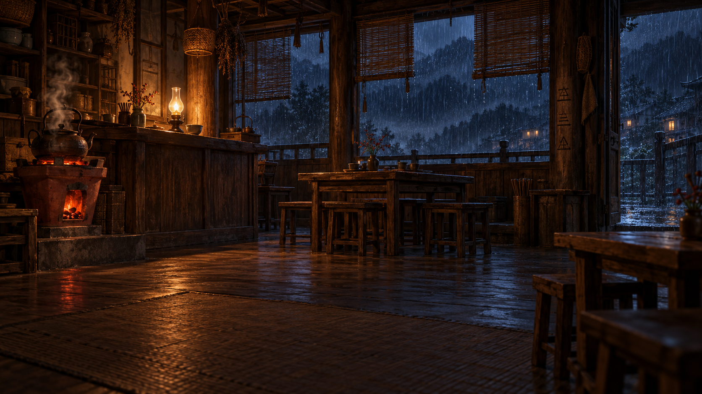
Use case: illustration-story. Production asset for Aquila branching visual novel. small mountain teahouse interior at night in heavy rain, single oil lamp on a low wooden counter, red clay charcoal stove glowing with a clay kettle steaming on it, low wooden tables and stools, bamboo blinds rattling against rain-dark windows, wooden doorframe with three carved height marks, warm amber lamplight against blue-black rain outside, moody cinematic visual-novel background art, wide establishing shot. Landscape 16:9 composition, high resolution. Environment only, no people. Keep lower quarter visually quiet for dialogue overlay. Cinematic painterly realism with detailed grounded architecture, subtle film grain, restrained color, matching Aquila visual novel backgrounds. No title, captions, logos, border, watermark, or invented readable text.
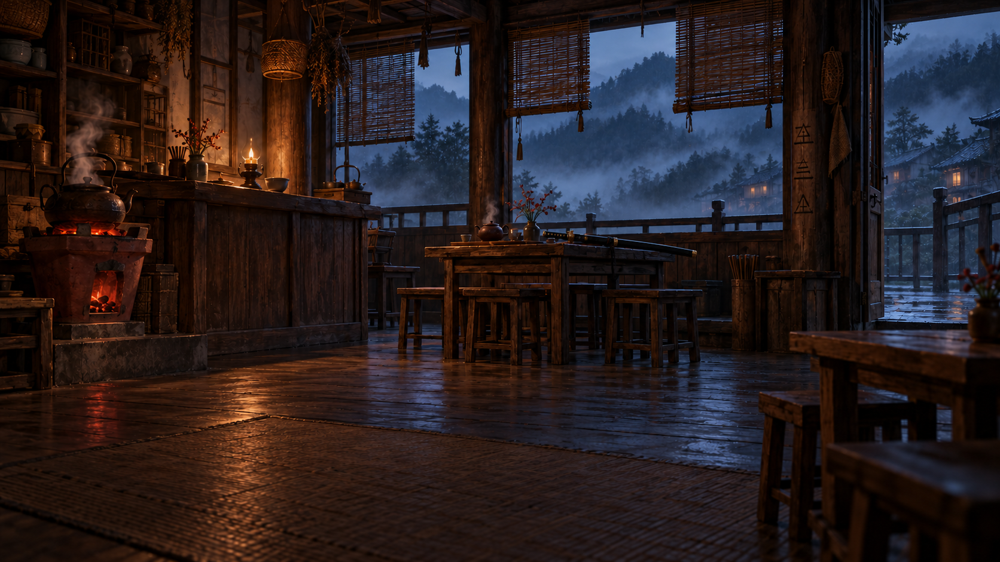
Use the supplied image as the edit target. Preserve character identity, proportions, clothing details and framing; for backgrounds preserve room architecture and camera position. Apply only the expression, pose, lighting, props, or scene changes described here: Use case: illustration-story. Production asset for Aquila branching visual novel. same small mountain teahouse interior just before dawn, rain stopped, cold blue-grey light seeping through bamboo blinds, oil lamp burned down to a small flame, embers glowing low in the red clay stove, thin steam rising from a purple clay teapot on a tea tray, a black-sheathed sword lying across a low wooden table, door left ajar onto mist, cold blue and faded amber palette, moody cinematic visual-novel background art, wide establishing shot. Landscape 16:9 composition, high resolution. Environment only, no people. Keep lower quarter visually quiet for dialogue overlay. Cinematic painterly realism with detailed grounded architecture, subtle film grain, restrained color, matching Aquila visual novel backgrounds. No title, captions, logos, border, watermark, or invented readable text.
Use case: illustration-story. Production asset for Aquila branching visual novel. narrow mountain pass at dawn between two sheer grey cliff walls, only a thin line of sky visible overhead, wet stone path with steps, twisted pines clinging to the rock, a sea of clouds and mist flowing below, first pale gold sunlight breaking through the gap, cold blue and pale gold palette, moody cinematic visual-novel background art, wide establishing shot. Landscape 16:9 composition, high resolution. Environment only, no people. Keep lower quarter visually quiet for dialogue overlay. Cinematic painterly realism with detailed grounded architecture, subtle film grain, restrained color, matching Aquila visual novel backgrounds. No title, captions, logos, border, watermark, or invented readable text.
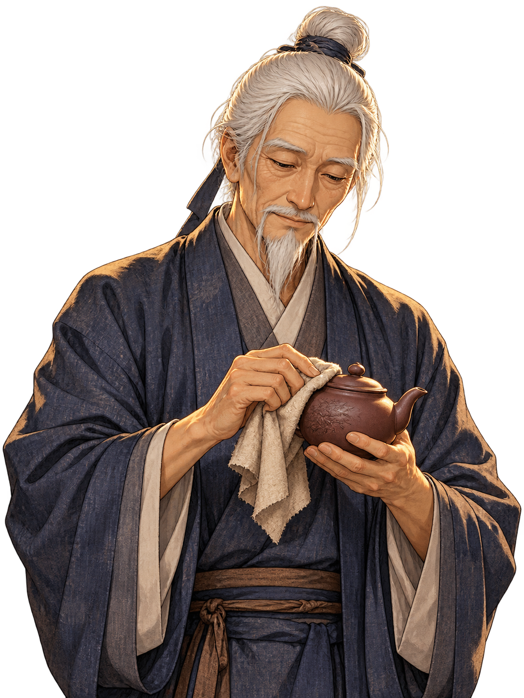
Use case: illustration-story. Production asset for Aquila branching visual novel. anime visual-novel portrait, elderly East Asian tea master around 70, thin white topknot, deeply lined calm face, half-lowered eyes, faded indigo cotton robe, polishing an old purple-clay teapot with a cloth, warm oil-lamp light, muted amber and indigo palette, upper-body shot, clean background. Single character portrait, vertical 3:4 composition, head and complete upper torso with hands and props included, generous margins, no cropped head. Refined anime visual novel painting, mature natural proportions, detailed restrained linework, soft painterly shadows. Genuine transparent background, isolated subject with no backdrop. Preserve all described clothing and distinguishing features. No title, captions, logos, border, watermark, or invented readable text.
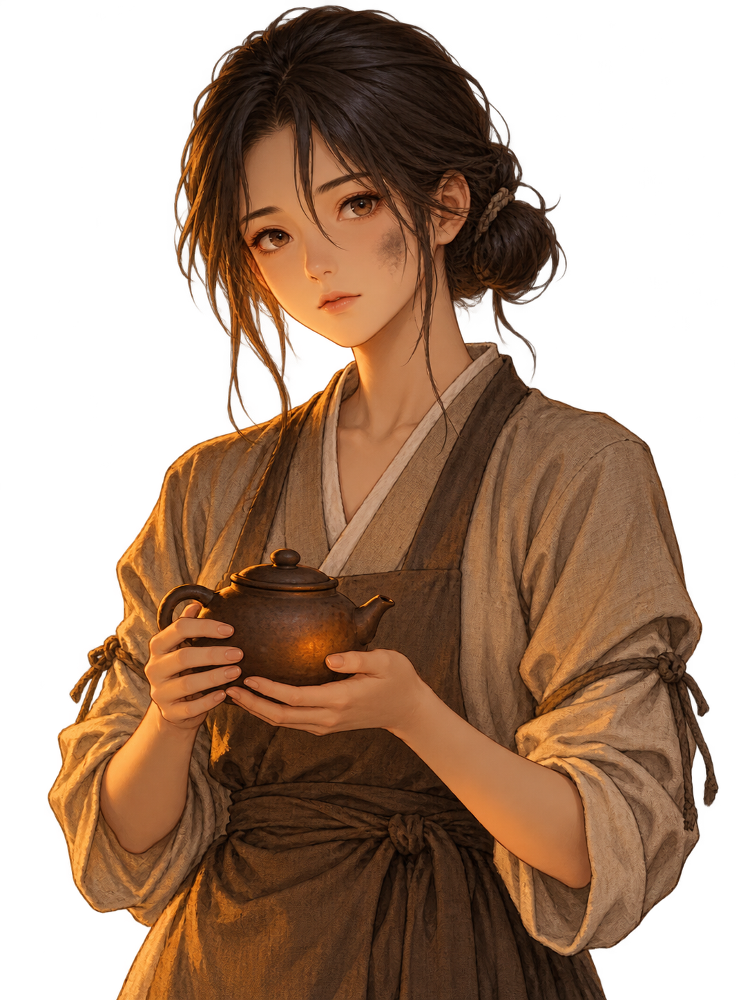
Use case: illustration-story. Production asset for Aquila branching visual novel. anime visual-novel portrait, 17-year-old East Asian girl, tea-house apprentice, plain undyed hemp robe with sleeves tied back by a cord, dark hair in a simple low bun with loose strands, faint soot smudge on one cheek, watchful quiet eyes, holding a small clay teapot in both hands, warm oil-lamp light from below, muted amber and brown palette, upper-body shot, clean background. Single character portrait, vertical 3:4 composition, head and complete upper torso with hands and props included, generous margins, no cropped head. Refined anime visual novel painting, mature natural proportions, detailed restrained linework, soft painterly shadows. Genuine transparent background, isolated subject with no backdrop. Preserve all described clothing and distinguishing features. No title, captions, logos, border, watermark, or invented readable text.
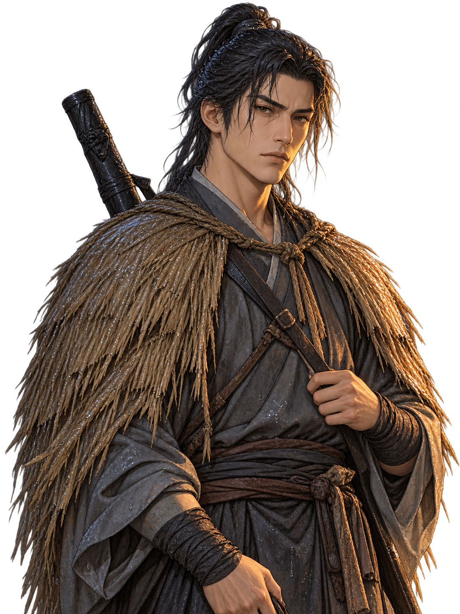
Use case: illustration-story. Production asset for Aquila branching visual novel. anime visual-novel portrait, 30-year-old East Asian swordsman, high brow bones, tightly pressed lips, rain-damp black hair tied back, dark grey travel robe under a straw rain cape, a black-sheathed sword wrapped in oilcloth across his back, cold restrained gaze, warm lamp light against blue rain shadow, upper-body shot, clean background. Single character portrait, vertical 3:4 composition, head and complete upper torso with hands and props included, generous margins, no cropped head. Refined anime visual novel painting, mature natural proportions, detailed restrained linework, soft painterly shadows. Genuine transparent background, isolated subject with no backdrop. Preserve all described clothing and distinguishing features. No title, captions, logos, border, watermark, or invented readable text.
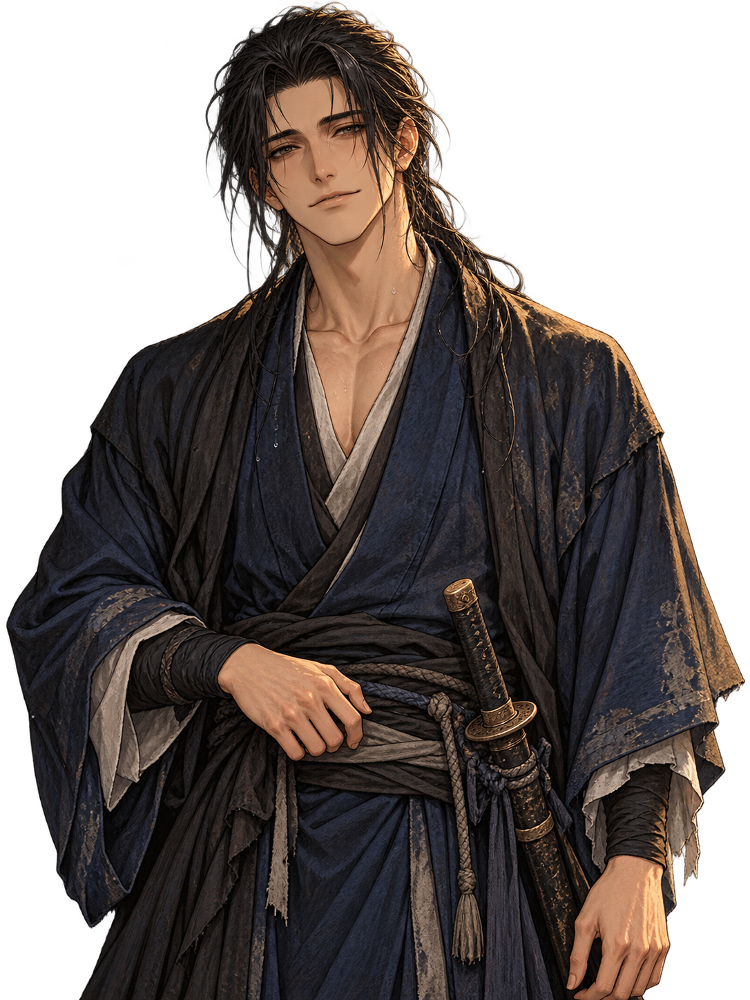
Use case: illustration-story. Production asset for Aquila branching visual novel. anime visual-novel portrait, 27-year-old East Asian swordsman, soaked black hair carelessly raked back, faint polite half-smile, worn dark blue robe, an old but immaculately clean sword sheath at his waist, tired amused eyes, warm oil-lamp light, upper-body shot, clean background. Single character portrait, vertical 3:4 composition, head and complete upper torso with hands and props included, generous margins, no cropped head. Refined anime visual novel painting, mature natural proportions, detailed restrained linework, soft painterly shadows. Genuine transparent background, isolated subject with no backdrop. Preserve all described clothing and distinguishing features. No title, captions, logos, border, watermark, or invented readable text.
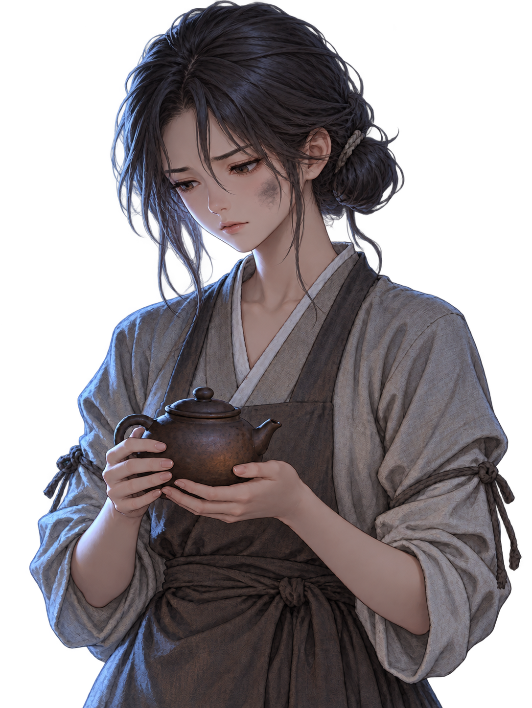
Use the supplied image as the edit target. Preserve character identity, proportions, clothing details and framing; for backgrounds preserve room architecture and camera position. Apply only the expression, pose, lighting, props, or scene changes described here: Use case: illustration-story. Production asset for Aquila branching visual novel. anime visual-novel portrait, 17-year-old girl tea apprentice, plain hemp robe, low bun with loose strands, brows drawn together, lips pressed tight, eyes lowered to the teapot in her hands, cold blue pre-dawn light, upper-body shot. Single character portrait, vertical 3:4 composition, head and complete upper torso with hands and props included, generous margins, no cropped head. Refined anime visual novel painting, mature natural proportions, detailed restrained linework, soft painterly shadows. Genuine transparent background, isolated subject with no backdrop. Preserve all described clothing and distinguishing features. No title, captions, logos, border, watermark, or invented readable text.
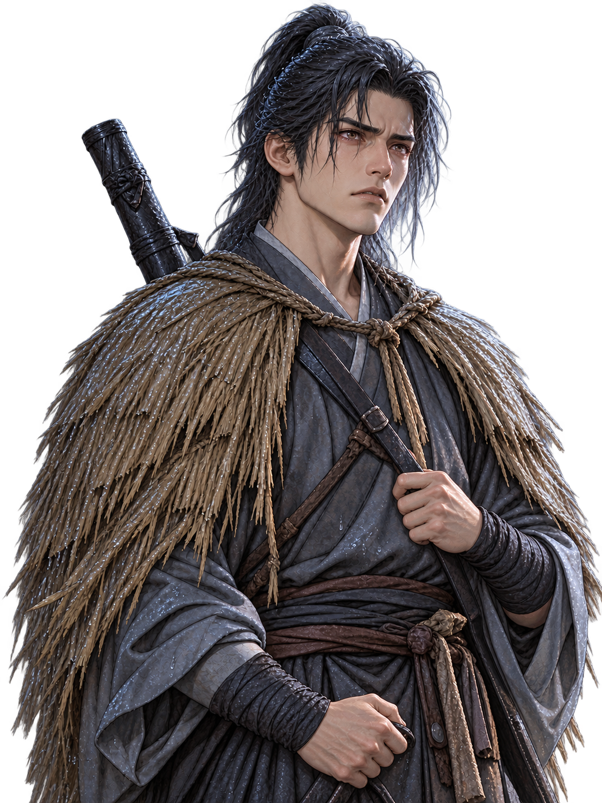
Use the supplied image as the edit target. Preserve character identity, proportions, clothing details and framing; for backgrounds preserve room architecture and camera position. Apply only the expression, pose, lighting, props, or scene changes described here: Use case: illustration-story. Production asset for Aquila branching visual novel. anime visual-novel portrait, 30-year-old swordsman, dark grey robe, black hair tied back, jaw clenched, eyes wide and unfocused with held-back grief, knuckles white on a sword hilt, cold pale dawn light, upper-body shot. Single character portrait, vertical 3:4 composition, head and complete upper torso with hands and props included, generous margins, no cropped head. Refined anime visual novel painting, mature natural proportions, detailed restrained linework, soft painterly shadows. Genuine transparent background, isolated subject with no backdrop. Preserve all described clothing and distinguishing features. No title, captions, logos, border, watermark, or invented readable text.
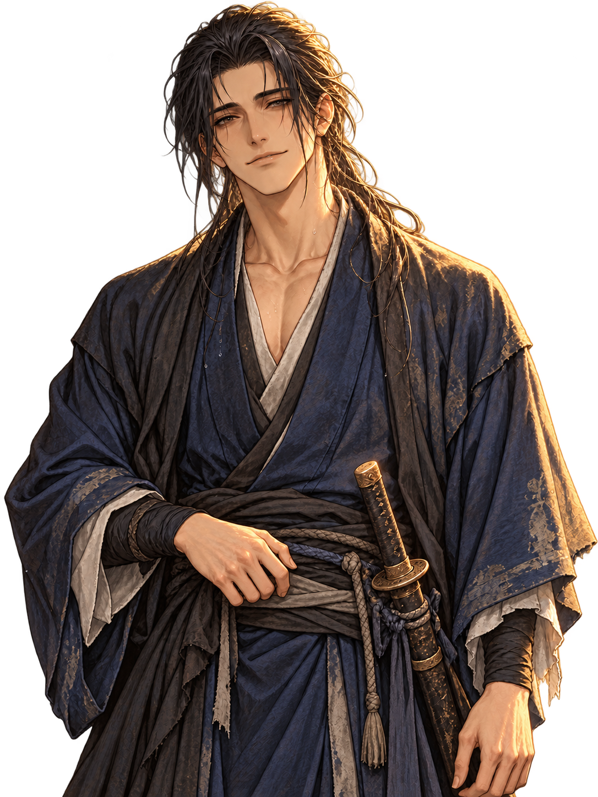
Use the supplied image as the edit target. Preserve character identity, proportions, clothing details and framing; for backgrounds preserve room architecture and camera position. Apply only the expression, pose, lighting, props, or scene changes described here: Use case: illustration-story. Production asset for Aquila branching visual novel. anime visual-novel portrait, 27-year-old swordsman, black hair raked back, easy crooked smile that does not reach his eyes, worn dark blue robe, sword at his waist, pale gold dawn light and mist, upper-body shot. Single character portrait, vertical 3:4 composition, head and complete upper torso with hands and props included, generous margins, no cropped head. Refined anime visual novel painting, mature natural proportions, detailed restrained linework, soft painterly shadows. Genuine transparent background, isolated subject with no backdrop. Preserve all described clothing and distinguishing features. No title, captions, logos, border, watermark, or invented readable text.
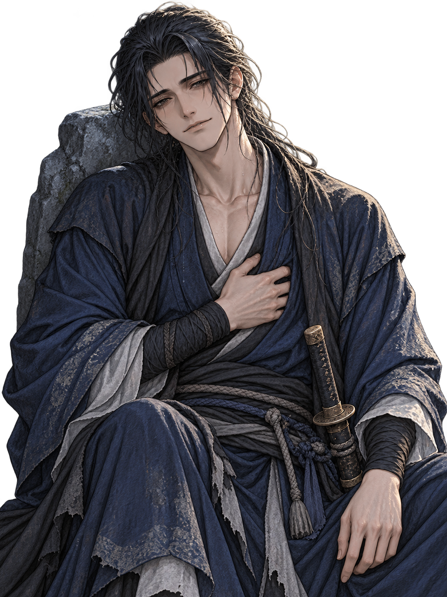
Use the supplied image as the edit target. Preserve character identity, proportions, clothing details and framing; for backgrounds preserve room architecture and camera position. Apply only the expression, pose, lighting, props, or scene changes described here: Use case: identity-preserve. Edit the reference Lu Chi portrait into his WOUNDED seated expression variant. Keep his exact face, raked-back black hair, worn dark-blue robe and sword sheath. Required changes: he is visibly SEATED, slumped with one shoulder leaning against a small upright rough GREY STONE behind his back; torso tilted rather than standing upright; face PALE with exhaustion; eyelids heavier, fragile tired closed-mouth smile; his right hand presses firmly over his CHEST through his robe. Replace ALL warm amber/gold illumination with COLD PALE GREY-BLUE dawn light, subtle pale gold at distant hair edge only. No blood, no wound, no gore. Include the small stone support as part of the isolated sprite but keep all other background genuinely transparent. Vertical 3:4 frame, preserve complete head and both visible hands. This pose and cold dawn lighting must visibly differ from the reference.